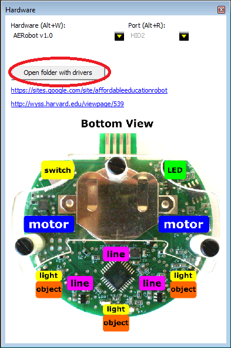
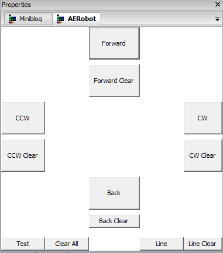
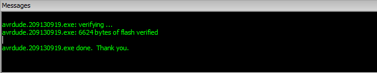
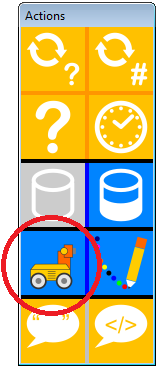
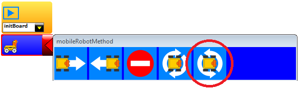
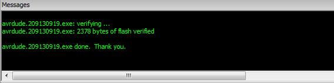

Overview
This page describes how to:
- download AERobot software and install the drivers;
- calibrate the robot's motors and its line sensors;
- program the robot using the graphical programming environment miniBloq.
Downloading and installing the software
Visit this page to get the latest version of miniBloq, an open-source graphical programming environment that supports AERobot along with other robots. (Windows is currently required; we're working to extend to other operating systems.) The installation package (currently miniBloq.v0.83.exe) is a single file containing everything you'll need; run it and follow the on-screen instructions to install the software on your computer.
Installing the drivers
Plug your robot into any USB port (note that if you have more than one robot, only one should be plugged into the same computer at one time).
Run miniBloq, look at the Hardware window, and press the button marked Open folder with drivers:

A window will open containing folders named calibrate, win7, and win8.
If you're running Windows 7, continue with the instructions here. If you're running Windows 8 or 10, continue with the instructions here.
Calibrating the motors
AERobot uses vibration motors rather than wheels to move around, sliding across a surface like a cell phone set to vibrate mode. The robot's movement depends on the speed and direction of spin of each of the two motors, and on the surface it's moving on. As a result, the motors need to be calibrated in order to make it move and turn effectively.
Calibrating the motors is essential to getting AERobot to move properly. Perform this procedure any time the robot's not moving as you expect. This may happen, for instance, when you move the robot to a new surface. (Note that because of this movement by sliding, the robot may not be able to move on all surfaces. For best results, operate it on a hard, flat surface, like a table (no tablecloth) or floor (no carpet!). Also, when the battery gets low, the motor performance will change, and the robot will begin to act as if it were badly calibrated; it's best to both calibrate and operate the robot with a well-charged battery.)
To calibrate the robot, from within miniBloq, go to the menu item View -> Properties (or press Alt-P.) Once the Properties window is open, select the AERobot tab:

The miniBloq programming interface lets you command the robot to move in four ways -- forward, backward, turn clockwise, turn counterclockwise -- and the calibration interface lets you set the motor speeds for each of those four commands so that it results in the corresponding type of movement. The following walks through the calibration procedure for Forward movement; the other three work the same way.
- Connect the robot to the USB port.
- Press the Forward Clear button. In the Messages window at the bottom, you should see the following message:
- Unplug the robot from the USB port. You will see the LED light up green.
- Plug the robot back in to the USB port.
- Press the Forward button and look for the successful upload message in the Messages window. (Again, it might take a few tries.)
- Unplug the robot and put it over the surface where you want to calibrate it. If it does not start to move, press its reset button.
- The robot will start moving, with both motors spinning slowly. The goal of calibration is to adjust the motor speeds so that the robot moves as straight and as fast as possible on the given surface. To increase the speed of one of the motors, put your hand in front of the distance sensor on that side of the robot. The LED will blink to indicate that the command was received, and the motor on that side will speed up (tending to turn the robot toward the opposite direction). Continue to increase the motor speeds on both sides until the robot is moving as intended. This video demonstrates the procedure:

If you don't see this screen, try pressing the robot's power button and pressing the Forward Clear button again. (N.B. It might take a few tries. An upcoming software patch will fix this issue.)
When you're satisfied with the robot's movement, press the power switch to turn it off. The current movement will be stored in the robot's memory, and those motor settings will be used the next time a program tells the robot to move forward. A good habit at this point is to plug the robot back in and load a new program (so that it doesn't start calibration again when you next turn it on, and force you to start over).
If the motor speed is set too high, the robot's movement can become erratic, and it can actually slow down. If this happens, use the Clear button and start calibration over for that movement direction.
Calibration for the other three kinds of movement works the same way. This video shows a few seconds of calibration for clockwise turning (notice how the rotation speed increases when the motor speed is adjusted):
Calibrating the line sensors
The sensors AERobot uses to detect a line drawn on the ground underneath it are also sensitive to the environment it's operating in -- the brightness values they detect depend on the amount of light in the room, and the reflectivity of the surface underneath -- and so they also need calibrating. Bright lights, especially sunlight, can saturate them; for best results, cover any windows in the room and turn down artificial lights.
AERobot is best at following a black line on a white background, where the line is about the same thickness as the robot's USB plug. (Here are sample lines if you don't want to draw your own.) To calibrate the sensors, take the line you want the robot to follow, open the calibration interface as you would for calibrating the motors, and go through the following procedure:
- Connect the robot to the USB port.
- Press the Line Clear button. (Again, look for the success message, and try again as necessary if you don't see it on the first try.)
- Unplug the robot. The LED should light up red.
- Plug the robot back in, and press the Line button until you get the success message.
- Unplug the robot. If the LED isn't lit, press the power button.
- Place the robot on the surface, centered on the line. The LED will cycle through three states: red for a few seconds, off very briefly, and then green for a few seconds. Put the robot on the surface when the light is red; once the light is green, press the power button to turn the robot off. (The actual calibration happens during the instant while the light is off. Red means "about to calibrate, get the robot ready and don't touch it"; green means "calibration is complete, it's safe to turn the robot off now".) This video shows the procedure:
Programming the robot
The main window in miniBloq provides a workspace where you can drag blocks from the Actions panel to create programs. To get started, here's how to create and run a simple first program that just has the robot turn counterclockwise indefinitely.
From the Actions panel at the right side of the screen, click on the block with the robot icon (representing movement commands):

A matching block appears as part of the program in the main workspace. The yellow block with the blue "Play" button on it indicates the start of the program; program flow will go downwards from there.
The new movement block has a red triangle at its right edge, indicating that the statement is incomplete. Click on the red triangle to pop up a list of available actions, and click on the button for counterclockwise rotation:

Now the triangle is green, indicating that the statement is complete. This is now a complete (if not very interesting) program.
To send this program to the robot, plug it into the USB port, and click the Run button (the green arrow in a circle in the top row of icons) or press Control-U. A black message window will pop up on the bottom of the screen; if the robot was sucessfully programmed, you'll see something like this:

If you see red text instead, or any error message, try pressing the robot's reset button while keeping the robot plugged into the USB port, and click Run or press Control-U again. Sometimes this operation may take two or three tries.
Once the message window indicates success, unplug the robot, flip it so the acrylic foot rests on the table and see how it moves. If it does not start to move, press its reset button.
A good way to learn about using miniBloq is to play around with it -- all the blocks and buttons have mouse-over tooltips to explain what they do. Here are a few points worth noting:
- You can drag blocks around to rearrange them within a program, and comment out specific blocks by right-clicking on them.
- Every time the robot runs a program, it first blinks its LED in blue three times.
- miniBloq automatically generates C code corresponding to the graphical program -- choose View -> Generated Code from the menu to show or hide it. This feature can provide a useful tool to help students make the transition from graphical to text-based programming. More advanced students can program the robot in C directly from that window.
- A number of example programs are provided within miniBloq from the File -> Examples menu. See also the Activities page on this site.
- More information about using miniBloq is available at its documentation page online.